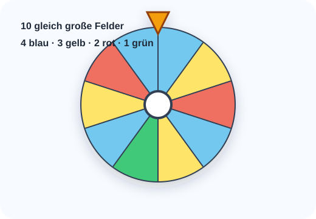

1
Glücksrad: Farben vergleichen

- Wie groß ist die Wahrscheinlichkeit für Blau?
- Wie groß ist die Wahrscheinlichkeit für Grün?
- Welche Farbe hat die größte Gewinnchance?
- Gib die Wahrscheinlichkeit für Rot als Bruch, Dezimalzahl und Prozentzahl an.
Blau: 4/10 = 40 %. Grün: 1/10 = 10 %. Größte Chance: Blau. Rot: 2/10 = 0,2 = 20 %.